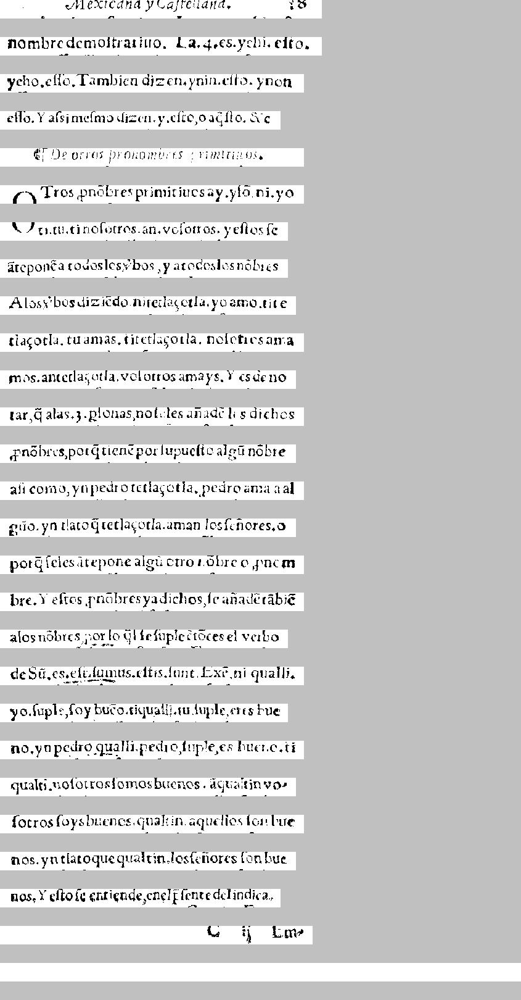

    s?" CR*?" "475-     * 9 
        Mexicana y Ca|tellana.          18

  nombre de mo|tratino. El 4. 4-S-7chi: e|to, 
nombre demo|tratiuo. La. 4. es. yehi. e|to.

 y e|to, ello. Tambien dizen. ynin e|to, y non 
yeho. e||o. Tambien dizen. ynin. e|to. ynon

 ello. Y a||i me|mo dicen, y, e|to, o a vi|to. Refe 
e||o. Y a|sime|mo dizen. y. e|to, o a\~q|to. &c

  CO DE PO-  
    ¶ De otros pronombres primitiuos.

 7-y Tros, prio|tres primitiuos ay, y lo ni-yo 
OTros pn\~obres primitiuos ay. y|\~o. ni. yo

 S. 49 to- tino|orros an: vo|otros, y e|tos |e 
ti. tu. ti no|otros. an. vo|otros. y e|tos |e

 ate pone a todos los bos y a todos los nobres 
\~atepon\~e a todos los vbos, y a todos los n\~obres

 Alos . bos diz toRo in itetlacotla, yoa mo-tite 
A los vbos dizi\~edo nitetla\ccotla. yo amo. tite

 tlacotla, tu amas, titetlacotla, no|otros atra- 
tla\ccotla. tu amas. titetla\ccotla. no|otros ama

  mos . antetlacotla, vo|otros a mays. Y es de no 
mos. antetla\ccotla. vo|otros amays. Y es de no

 tartel a las  3. li|onjas, no |e les alta de les dichos 
tar \~q alas. 3. p|onas, no |eles a\~nad\~e los dichos

 . Enobres, por el tiene por |upue|to algo nobre 
pn\~obres, por\~q tien\~e por |upue|to alg\~u n\~obre

 a|i como, yn pedro tetlacotla . pedro ama.a al 
a|i como, yn pedro tetla\ccotla. pedro ama a al

 grio . yn tlatoq tetlacotla, aman los |enores, o 
g\~uo. yn tlato\~q tetla\ccotla. aman los |e\~nores. o

  por el |e les ire pone algo otro cobrejo, |in em- 
por\~q |eles \~atepone alg\~u otro n\~obre o pnom

 bre. Y e|tos, |ino bres ya dichos, |e anaderrible 
bre. y e|tos pn\~obres ya dichos, |e a\~nad\~e t\~abi\~e

 a los nobres . otzotli |e |uplectores el verbo 
a los n\~obres, por lo q\l |e |uple \~toces el verbo

 de bu.es: Si ca|u11jus, e|tis, |unt |exo ni qualli, 
de S\~u. es. e|t. |umus. e|tis. |unt. Ex\~e ni qualli.

  yo, |uple, |oy buen ti qualli, in |uple eres bue- 
yo |uple, }oy bu\~eo, tiqualli. tu. |uple, eres bue

  no, yn pedro qualli . pedro |upieres fuerte, |i 
no. yn pedro qualli. pedro, |uple, es bueno. ti

  qualti, no|otros |omos buenos . aqualtin vo- 
qualti. no|otros |omos buenos. \~aqualtin vo-

 |otros |uya buenos qual fin aquellos |on bue- 
|otros |oys buenos. qualtin. aquellos |on bue

 nos, yn tlatoque qualtin, los |enores |on bue- 
nos. yn tlatoque qualtin. los |e\~nores |on bue

 nos. Y e|to |e entiendetenell, |ente del indica. 
nos. y e|to entiende, en el \~p|ente del indica.

          I.-O la Len- 
                    c ii Em-

                         


===============================================


    [latin s?" CR*?" ][spanish "475-     * 9 
  nombre de mo|tratino. El ][latin 4. 4-S-7chi: ][spanish e|to, 
 y e|to, ello. Tambien dizen. ][nahuatl ynin ][spanish e|to, y ][latin non 
 ][spanish ello. Y a||i me|mo dicen, y, e|to, o a vi|to. Refe 
  CO DE PO-  
 7-y Tros, prio|tres primitiuos ay, y lo ][nahuatl ni-yo 
 S. 49 to- tino|orros an: ][spanish vo|otros, y e|tos |e 
][null  [spanish ate pone a todos los bos y a todos los ][nahuatl nobres 
 Alos . bos diz toRo in itetlacotla, yoa mo-tite 
 tlacotla, ][latin tu amas, ][nahuatl titetlacotla, ][spanish no|otros atra- 
  mos ][nahuatl . antetlacotla, ][spanish vo|otros a mays. Y es de no 
 tartel a las  3. li|onjas, no |e les alta de les dichos 
 . Enobres, por el tiene por |upue|to algo nobre 
 a|i como, ][nahuatl yn pedro tetlacotla . pedro ama.a al 
][null  [nahuatl grio . yn tlatoq tetlacotla, ][spanish aman los |enores, o 
  por el |e les ire pone algo otro cobrejo, |in em- 
 bre. Y e|tos, |ino bres ya dichos, |e anaderrible 
 a los ][nahuatl nobres . otzotli ][spanish |e |uplectores el verbo 
 ][nahuatl de bu.es: ][latin Si ca|u11jus, e|tis, |unt ][spanish |exo ni ][nahuatl qualli, 
  ][spanish yo, |uple, |oy buen ti ][nahuatl qualli, in ][spanish |uple eres bue- 
  no, ][nahuatl yn pedro qualli . pedro ][spanish |upieres fuerte, |i 
][null   [nahuatl qualti, ][spanish no|otros |omos buenos ][nahuatl . aqualtin ][spanish vo- 
 |otros |uya buenos qual fin aquellos |on bue- 
 nos, ][nahuatl yn tlatoque qualtin, ][spanish los |enores |on bue- 
 nos. Y e|to |e entiendetenell, |ente del indica. 
          I.-O la Len- 
                         


<table><tr><td>
<font face="courier"> 
</br></br></br></br></br>
</br></br>

    <font color="Red">s?" CR*?" </font><font color="Blue">"475-     * 9 </br>
  nombre de mo|tratino. El </font><font color="Red">4. 4-S-7chi: </font><font color="Blue">e|to, </br>
 y e|to, ello. Tambien dizen. </font><font color="Olive">ynin </font><font color="Blue">e|to, y </font><font color="Red">non </br>
 </font><font color="Blue">ello. Y a||i me|mo dicen, y, e|to, o a vi|to. Refe </br>
  CO DE PO-  </br>
 7-y Tros, prio|tres primitiuos ay, y lo </font><font color="Olive">ni-yo </br>
 S. 49 to- tino|orros an: </font><font color="Blue">vo|otros, y e|tos |e </br>
</font><font color="Black"> <font color="Blue">ate pone a todos los bos y a todos los </font><font color="Olive">nobres </br>
 Alos . bos diz toRo in itetlacotla, yoa mo-tite </br>
 tlacotla, </font><font color="Red">tu amas, </font><font color="Olive">titetlacotla, </font><font color="Blue">no|otros atra- </br>
  mos </font><font color="Olive">. antetlacotla, </font><font color="Blue">vo|otros a mays. Y es de no </br>
 tartel a las  3. li|onjas, no |e les alta de les dichos </br>
 . Enobres, por el tiene por |upue|to algo nobre </br>
 a|i como, </font><font color="Olive">yn pedro tetlacotla . pedro ama.a al </br>
</font><font color="Black"> <font color="Olive">grio . yn tlatoq tetlacotla, </font><font color="Blue">aman los |enores, o </br>
  por el |e les ire pone algo otro cobrejo, |in em- </br>
 bre. Y e|tos, |ino bres ya dichos, |e anaderrible </br>
 a los </font><font color="Olive">nobres . otzotli </font><font color="Blue">|e |uplectores el verbo </br>
 </font><font color="Olive">de bu.es: </font><font color="Red">Si ca|u11jus, e|tis, |unt </font><font color="Blue">|exo ni </font><font color="Olive">qualli, </br>
  </font><font color="Blue">yo, |uple, |oy buen ti </font><font color="Olive">qualli, in </font><font color="Blue">|uple eres bue- </br>
  no, </font><font color="Olive">yn pedro qualli . pedro </font><font color="Blue">|upieres fuerte, |i </br>
</font><font color="Black">  <font color="Olive">qualti, </font><font color="Blue">no|otros |omos buenos </font><font color="Olive">. aqualtin </font><font color="Blue">vo- </br>
 |otros |uya buenos qual fin aquellos |on bue- </br>
 nos, </font><font color="Olive">yn tlatoque qualtin, </font><font color="Blue">los |enores |on bue- </br>
 nos. Y e|to |e entiendetenell, |ente del indica. </br>
          I.-O la Len- </br>
                         </br>
</font></font><br/><br/><br/>
<font color="Black">null</font></br>
<font color="Blue">spanish</font></br>
<font color="Red">latin</font></br>
<font color="Olive">nahuatl</font></br>
</td><td>
</td></tr></table>


CER: 0.28052805280528054
CER, allow f->s: 0.28052805280528054
WER, keep punc: 0.7586206896551724
WER, keep punc, allow f->s: 0.7586206896551724
WER, remove punc: 0.6009852216748769
WER, remove punc, allow f->s: 0.6009852216748769
